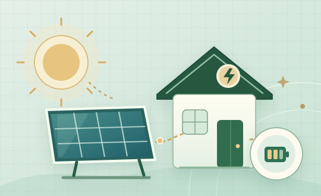

SIRAI / ENERGY PLANNING
TaqaWise.
Understand your energy. Plan smarter.
From everyday appliances to outage backup and solar possibilities, bring your household's electricity needs into focus.
Explore your energy plan ↘Free · No account · Four languages

A learning tool for early planning. Results are estimates, not equipment specifications or installation advice.
PLAN WITH CLARITY
Electricity makes everyday life possible. Understanding it should be easier.
TaqaWise is a practical worksheet, not a product catalogue. Enter your appliances, choose what truly matters during an outage, then explore how assumptions change the results.
Looking specifically at household cooking? Our new explorer starts with electricity access, then compares user-entered costs.
Explore cooking energy ↗YOUR ENERGY WORKSPACE
Build a plan you can explain.
Build your energy picture, plan backup and solar, then review your results.
Your entries stay in this browser. Nothing is uploaded to SIRAI.
01 / 04
What uses electricity in your home?
Add appliances and enter their rated power and daily operating hours. For cycling appliances, estimate equivalent active hours using measured data where possible.